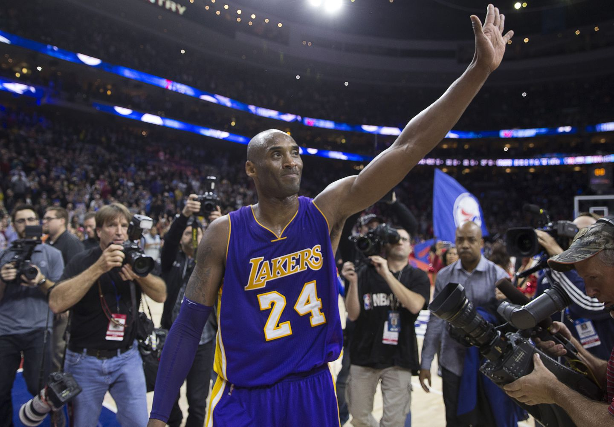
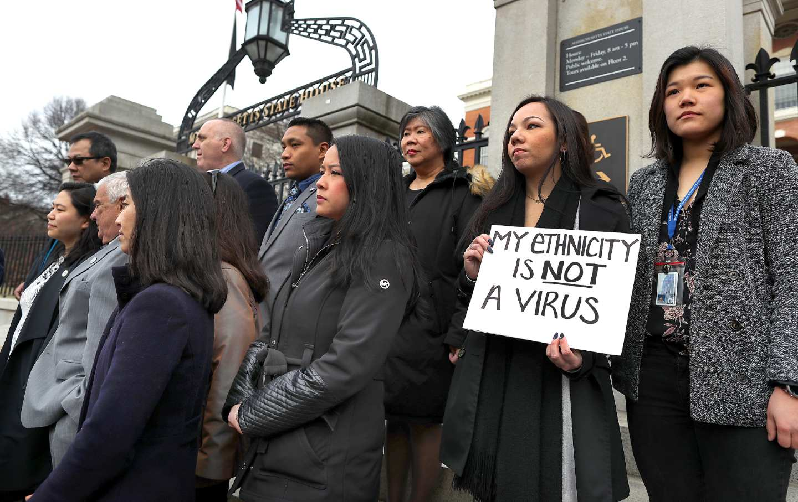
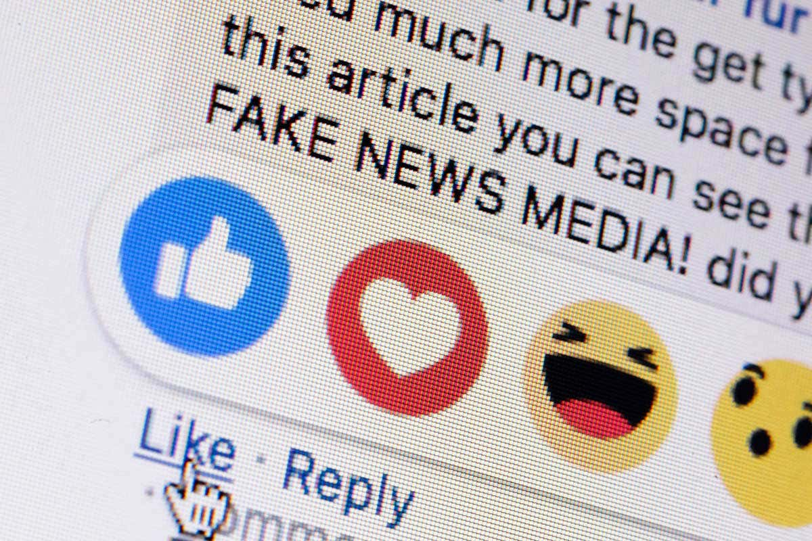

Comparative Analysis: The Media's Take on Kobe Bryant's Legacy
Johnny Ly
December 10, 2020
Note: Kobe Bryant waving goodbye to crowd (https://nittanynewslehighvalley.com/wp-content/uploads/2020/01/kobe.jpg)
Kobe Bryant was an inspiration to many people around the world regardless if they were basketball fans or not. The five-time NBA champion had a lucrative career in the sport of basketball with many more achievements to show outside of the sport. For some, he was an eyesore because of the way he completely dominated their favourite players with his Mamba Mentality, but for others, he was their real-life superhero. Regardless of where people were on this spectrum, people all around the world came together to celebrate life after the tragedy that ensued on January 26th of 2020. On this day, Kobe Bryant, his daughter Gigi and seven others on board perished in a helicopter crash. This sent ripples throughout the sports world, shaking millions of lives. However, for the news world, this event meant that there could be enough content to satisfy their journaling quotas for the next few months or even years. Many news outlets do not care whether their services affect the lives of others. Rather, they are more interested in reporting what gets the most views to satisfy their own agendas. In this essay, mainstream news media outlets will be compared to alternative media outlets by examining articles about Kobe Bryant. Concepts such as framing, objectivity, newsworthiness and professionalism will be explored together with these articles to understand how the media framed Kobe’s legacy after his death.
Instagram's Effects on Well-being and Media Literacy as a Solution
Johnny Ly
April 19, 2020
Note: Woman on Bus (https://i.insider.com/5d6046bfadbcf86dbb1a174e?width=1100&format=jpeg&auto=webp)
Instagram is one of the world’s most successful and influential social media platforms that have emerged since the start of the digital age. The application is a picture based social media platform, meaning that most of its usage is built around visual communication amongst its users. There is no question about the change it has brought in society from giving a voice to marginalized groups to quick dissemination of important news. However convenient and influential Instagram may be, it is not uncommon to hear about problems that stem from its usage. Some users who build unhealthy relationships with this addicting social media app are at risk for compromising their mental health and wellbeing. Many say that this is because the app is photo based; creating an environment where people can easily compare themselves to others online. Without knowing, users can fall into the trap of quantifying their value and worth to the results they produce in comparison to others online. Overtime this can lead to damaged self esteem and eventually develop into mental health issues further down the line. To examine this, scholarly academic researches will be synthesized to draw a hypothesis on how Instagram plays a role in our mental health, and how it’s use can affects our overall wellbeing.
Discourse Analysis of Coronavirus(Covid-19) Articles
Johnny Ly
April 13, 2020

Note: Anti-racism protest during Covid19 pandemic (https://www.thenation.com/wp-content/uploads/2020/04/asian-american-covid-protest-getty-img.jpg)
Racist remarks and xenophobia have been considered throughout history as one of the main reasons why the world cannot band together in difficult times. Distaste for a foreign culture or ethnic background can emerge from a wide array of issues. In 2020 it has never been more apparent with the start of the Coronavirus. Also called COVID-19, the Coronavirus pandemic shook the world in the first quarter of 2020. Although the pandemic began in late 2019 in Wuhan, the rest of the world would eventually experience its adverse effects months later with the quick spread of the virus to other countries. As mentioned, the Coronavirus have led to spiteful racism by some parts of the world towards the people of Wuhan, people of Chinese ethnicity and in some cases, Asians in general. To further analyze how Coronavirus has insinuated racism towards these people, two opposing articles will be deconstructed based on their discourse. This will uncover their intended meanings, the audience that the articles are written for and how these articles eventually contribute to producing a version of reality as we know it.
Analysis of Fake News, Its Purpose, Impact and Media Literacy as a Solution
Johnny Ly
November 17, 2019

Note: Fake news media photo (https://images.newscientist.com/wp-content/uploads/2019/11/22141648/gettyimages-1128224682.jpg)
There has never been a point in time where information could be accessed as easily as it has today. However, this freedom of information comes with many risks in today’s network society. Amongst them, fake news is an unexpected culprit that has strung society along for centuries and is now associated with disinformation, click-bait, false news, propaganda, hoax news and many more. Some viewers treat it as purely entertainment and believe it is harmless, but how do we distinguish it from real news? And where is the line drawn in terms of entertainment and the entire fabrication of a story? Fake news is a term that has multiple implications and although it can be a source of laughter, it can also ruin lives and be used to manipulate public opinion. This exploratory paper will analyze the concept of fake news, its purpose and impact on Canadians, and the growing importance of media literacy in an age of information overload. Academic and non-academic sources will be cited along with material from the course modules to tackle different points of views regarding fake news.